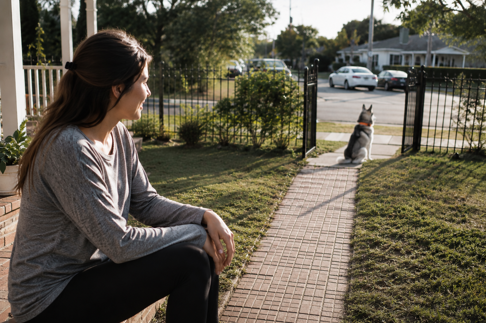

No fence teaches a dog anything. It just physically stops them — until the gate's left open, the wire fails, or they find the one gap you didn't know was there. What actually teaches a dog where "safe" ends isn't the barrier. It's the feedback. That's the part most people never think to ask about.
There's a specific kind of dread that comes with an open gate and no dog in sight. You don't know if they're two feet away sniffing something or two streets over near traffic. You're guessing, and guessing is a genuinely awful way to spend the next twenty minutes.
A GPS boundary collar removes the guessing entirely. But the location tracking is honestly the less interesting part — plenty of trackers can tell you where a dog is after the fact. The part worth understanding is what happens in the seconds before your dog reaches the edge, because that's what determines whether "after the fact" ever happens at all.
Someone leaves a side door cracked. A squirrel does something unforgivable near the property line. And for three or four seconds, your dog is a rocket with zero concept of "too far." That gap — between impulse and consequence — is the entire ballgame. Everything below is really about what fills that gap.
Not a shock the second a paw crosses a line. A layered conversation the dog is taught to understand — and largely control the outcome of, through their own behavior.
Roughly 7–10 feet out, before any boundary is actually reached, a first cue plays — a tone, a vibration, whatever's been set. Nothing punishing. Just a heads up. If the dog turns around here, that's it. Nothing else happens.
Static correction exists as an option, but it's opt-in and set to the lowest effective level by design. Most dogs respond fully to sound or vibration alone — the harsher option is there for the minority who need it, not the default for everyone.
This is the part that separates a genuinely smart system from a dumb one: it reads direction, not just position. A dog already turning back toward safety gets no further correction at all — no confusing, unearned buzz for doing the right thing. A dog continuing to press forward gets escalating feedback until they stop.
Feedback that fires regardless of direction teaches a dog nothing except "the yard is unpredictable." Feedback tied to direction teaches an actual rule: turn back, and it stops. That distinction is most of what makes this work at all.
The moment a dog stops or reverses course, an encouraging cue plays — something they're taught to associate with "correct." It's not just an absence of correction, it's an active, positive signal. Dogs that keep testing a boundary usually aren't being stubborn; they're getting an incomplete picture. This closes the loop.
Real talk: no system is airtight against every determined dog. But if a boundary is crossed, correction continues within an extended zone well beyond the fence line — not a single buzz and a shrug. And if a dog gets past even that, the system stops correcting entirely and switches to pure encouragement, guiding them back rather than adding stress to an already-loose dog. You get a live location the entire time either way.

Same as most things in a dog's life — it comes down to temperament.
Low impulse control around distractions and boundaries. This is close to essential, not optional.
Independent enough to wander off just to see what's out there. The peace of mind alone is worth it.
Tend to stay close by instinct. Still useful, but you'll likely lean on it far less often.
Usually stick to trusted people rather than wander — though a rattled shy dog can still bolt, so it's not nothing.
A boundary system doesn't replace a fence, and it definitely doesn't replace supervision. What it does is close the exact gap where most escapes actually happen — the few seconds between impulse and consequence, where a dog either gets taught something or gets lucky. You don't want to be relying on luck.
If you already know your dog runs Wild or Aloof, this stops being a "nice to have" pretty quickly. If they run Calm or Shy, it's still worth having — just don't expect to use it daily.
Specs, current pricing, color options, and real owner reviews — everything worth checking before you decide if this is the right boundary system for your dog.
Check It Out Here →Disclosure: As an Amazon Associate, PuppyMatch Pro earns from qualifying purchases. The link above is an Amazon affiliate link, and we may be compensated if you make a purchase through it — at no additional cost to you. No GPS boundary system is a substitute for proper supervision, secure fencing where required by law, or your dog's individual needs — when in doubt, talk to a trainer or your vet.